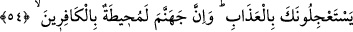

“Kim ölürse kıyameti kopmuştur”[194] hadisi de buna deâlet eder. Berzah âleminde,
sadece rûha âid olması yönüyle yarı yarıya da olsa bir azâb vardır.
Bazıları demiştir ki: Belki de “ansızın” ile kasdedilen; azâbı acele istedikleri zaman
acele olarak ve bu isteklerine icâbet olsun diye gelmemesidir; çünkü bu takdirde,
onların görüş ve duyumlarına göre gelmiş olur.
Bazı haberlerde şöyle varid olmuştur: “Kim hâlini düzelterek ve ölüme hazırlanarak
ölürse, uykuda da olsa ansızın değildir. Kim de hâlini düzeltmez ve ölüm için
hazırlanmazsa, bir yatakta yattığı halde de ölse, bu ansızın demektedir.”
Letâifü’l-minen’de der ki: İlimle iştiğal eden bazı kimselerle, ilimde niyyet ihlâsın
sırf Allah için olmasından bahsediyorduk. Ben dedim ki: Allah için ilim taleb eden
kimseye; “yarın öleceksin” denilse, elinden kitabı yere koymaz. Yâni hakları tastamam
yerine getirdiği için hâlini değiştirmez. Dolayısıyla ona göre, bu hâlinden daha efdal,
üstün bir hâl yoktur ve ölümün kendisine bu hâlde iken gelmesini ister ve sever.
Sen kâr ve mal düşüncesiyle gaflete dalmışsın;
Halbuki ömür sermayesi ayaklar altında kalmış
Bir yol tut kendine ve Allah’ın sevgisini kazan;
Bir şefaatçi bul bağışlanmayı dile
Yoksa, zamanın dönmesiyle hayatının kadehi dolduğu vakit,
Aman dileyecek bir vakit bulamazsın
54. (Evet) senden azâbı çarçabuk (getirmeni) istiyorlar. Hiç şüpheleri olmasın,
cehennem kâfirleri çepeçevre kuşatacaktır.
Cehennem, üzerinde daha şiddetlisi olmayan bir azâb yeridir. Onları kuşatması da pek
yakındır; çünkü her gelecek şey yakın demektir.
el-İrşad’da der ki: Âyetin isim cümlesi olarak gelişi, cehennem azâbının onları
kesinkes kuşatacağına delâlet eder. Burada sebebin hâli, müsebbeb yerine indirilmiştir;
çünkü küfür ve günahlar cehenneme girmeğe ve onları kuşatmağa sebeptirler.
Bazıları demiştir ki: Küfür ve günahlar, hakîkatta ateştirler; ikinci kez yaratılışta bu
şekil ve surette ortaya çıkarlar.
55. O günde azap, onları hem üstlerinden hem ayaklarının altından saracak ve
Allah (onlara): “Yaptıklarınızı (cezâsını) tadın!” diyecektir.